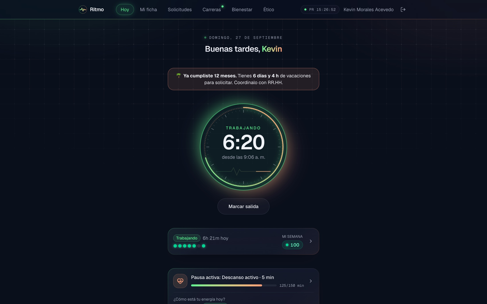
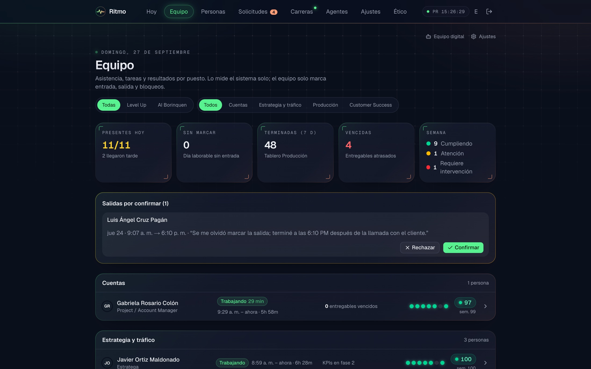
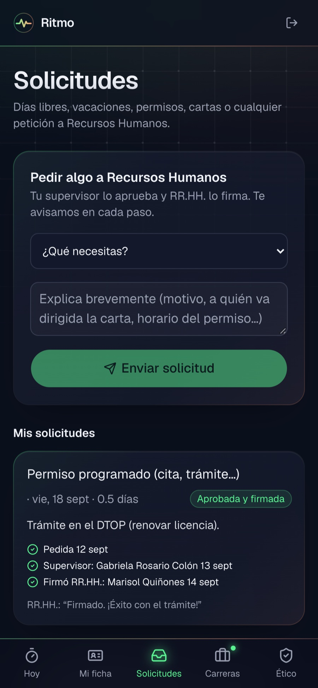
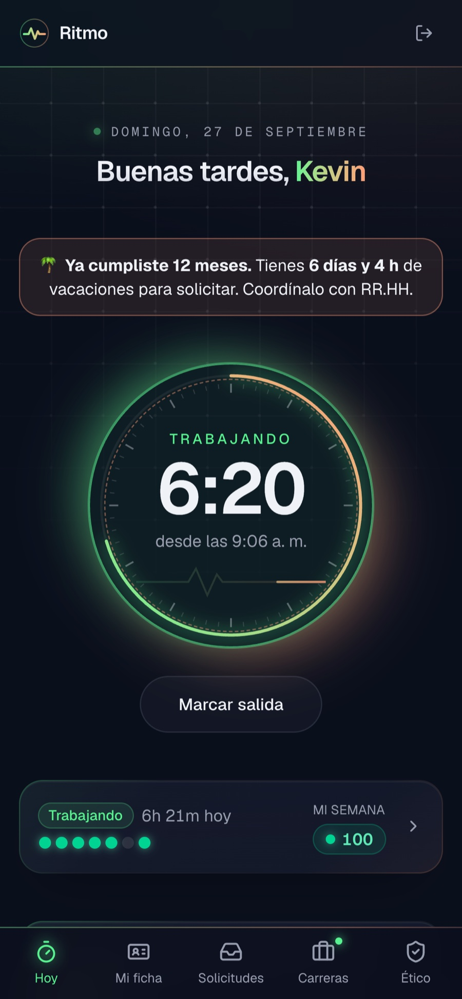

Asistencia y desempeño del equipo. Sin vigilar.
Desde su computadora aprobada, con la hora del servidor. Nada de capturas ni GPS.

Quién está, quién cumple sus KPIs y qué está vencido. Sin preguntarle a nadie.

El supervisor aprueba, RR.HH. firma. Y en el teléfono, como una app.


Tu equipo, a su ritmo.